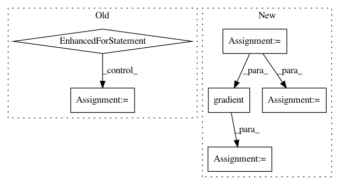

65bb3580e5cdd9adee17b5f80fba949550931271,test/test_tensorflow.py,MPITests,test_horovod_broadcast_grad,#MPITests#,591
Before Change
dtypes = [tf.float32, tf.float64]
dims = [1, 2, 3]
root_ranks = list(range(size))
for dtype, dim, root_rank in itertools.product(
dtypes, dims, root_ranks):
tensor = tf.ones([5] * dim) * rank
if dtype == tf.bool:
tensor = tensor % 2
tensor = tf.cast(tensor, dtype=dtype)
broadcasted_tensor = hvd.broadcast(tensor, root_rank)
grad_ys = tf.ones([5] * dim)
grad = tf.gradients(broadcasted_tensor, tensor, grad_ys)[0]
grad_out = session.run(grad)
c = size if rank == root_rank else 0
expected = np.ones([5] * dim) * c
err = np.linalg.norm(expected - grad_out)
self.assertLess(err, 0.00000001,
"gradient %s differs from expected %s, "
"error: %s" % (grad_out, expected, str(err)))
def test_compression_fp16(self):
valid_dtypes = [tf.float16, tf.float32, tf.float64]
invalid_dtypes = [tf.uint8, tf.int8, tf.uint16, tf.int16,
tf.int32, tf.int64, tf.bool]
After Change
for dtype, dim, root_rank in itertools.product(
dtypes, dims, root_ranks):
if _executing_eagerly():
tensor = self.tfe.Variable(tf.ones([5] * dim) * rank)
else:
tensor = tf.ones([5] * dim) * rank
if dtype == tf.bool:
tensor = tensor % 2
if _executing_eagerly():
with tf.GradientTape() as tape:
tensor = tf.cast(tensor, dtype=dtype)
broadcasted_tensor = hvd.broadcast(tensor, root_rank)
grad_out = tape.gradient(broadcasted_tensor, tensor)
else:
tensor = tf.cast(tensor, dtype=dtype)
broadcasted_tensor = hvd.broadcast(tensor, root_rank)
grad_ys = tf.ones([5] * dim)
grad = tf.gradients(broadcasted_tensor, tensor, grad_ys)[0]
grad_out = self.evaluate(grad)
c = size if rank == root_rank else 0
expected = np.ones([5] * dim) * c
err = np.linalg.norm(expected - grad_out)
In pattern: SUPERPATTERN
Frequency: 3
Non-data size: 6
Instances
Project Name: horovod/horovod
Commit Name: 65bb3580e5cdd9adee17b5f80fba949550931271
Time: 2019-01-09
Author: 38317191+kuroko1t@users.noreply.github.com
File Name: test/test_tensorflow.py
Class Name: MPITests
Method Name: test_horovod_broadcast_grad
Project Name: horovod/horovod
Commit Name: 65bb3580e5cdd9adee17b5f80fba949550931271
Time: 2019-01-09
Author: 38317191+kuroko1t@users.noreply.github.com
File Name: test/test_tensorflow.py
Class Name: MPITests
Method Name: test_horovod_allreduce_grad
Project Name: deepchem/deepchem
Commit Name: 387e650e16a5405691fb18ce05b34bd90239180e
Time: 2020-01-31
Author: peastman@stanford.edu
File Name: deepchem/metalearning/maml.py
Class Name: MAML
Method Name: train_on_current_task